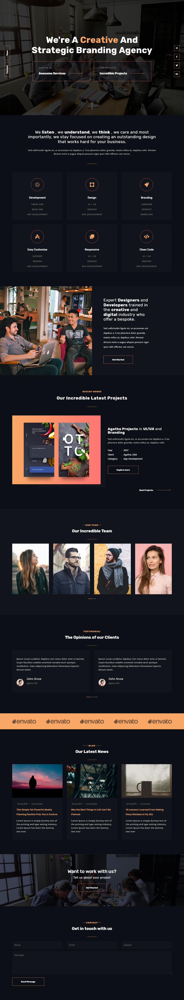

Introduction
Live PreviewThank you for purchasing Petir template. This documentation will give you an overview of the template and help you to know how to customize it to your requirements.
Requirements
Text Editor
To modify Petir you should have a text editor. You can use any editor (e.g. Atom, Sublime Text, etc.).
FTP Client
To publish your website you will need transfer files to remote server of your hosting. It's very important to understand that you must either have your own server space or use someone else's. The server space can be purchased at many different places around the Internet. You need somewhere to put the files that you purchased so others can find them online.
To transfer your files to server you can use different FTP clients (e.g. FileZilla). How to upload files to server with FileZilla you can read here. You should upload the contents of an archive to root directory.
HTML & Site Structure
HTML Structure
The layout in Petir is flexible because this use "bootstrap" system based on bootstrap grid. The general template structure is the same throughout the template. Here is the general structure :
<!--Loader -->
<div class="akar-loader">
</div>
<!-- Loader end -->
<!-- Start Navbar -->
<nav class="navbar navbar-expand-lg">
</nav>
<!-- End Navbar = -->
<!-- Start Header -->
<header class="valign header">
</header>
<!-- End Header -->
<!-- Start About -->
<section class="about" data-scroll-index="1">
</section>
<!-- Portfolio Start -->
<section class="portfolio" data-scroll-index="2">
</section>
<!-- Portfolio End -->
<!-- Team Start -->
<section class="team bg-main" data-scroll-index="3">
</section>
<!-- Team End -->
<!-- Testimonial Start -->
<section class="testimonial bg-main" data-scroll-index="4">
</section>
<!-- clients -->
<div class="partner bg-main">
</div>
<!-- Testimonial End -->
<!-- Start Blog -->
<section class="blog bg-main" data-scroll-index="5">
</section>
<!-- End Blog -->
<!-- Start Contact -->
<section class="contact bg-main mb-down" data-scroll-index="6">
</section>
<!-- End Contact -->
<!-- Start Footer -->
<section class="footer bg-second">
</section>
<!-- End Footer -->
Visual Structure
The layout in Petir have 8 sections and each sections and element present in it.
CSS
All CSS files located in assets/css & assets/vendor directory. Template has 9 css files:
- bootstrap.min.css
- owl.carousel.min.css
- owl.carousel.default.css
- all.css
- magnific-popup.css
- animate.css
- style.css
- responsive.css
all.css
Get vector icons and social logos on your website with Font Awesome, the web’s most popular icon set and toolkit. See more at fontawesome.com
aos.css
Animate On Scroll Library See more at https://michalsnik.github.io/aos/
bootstrap.min.css
File with styles of Boostrap 4 Framework. It contains only grid system, other Boostrap styles not included. See more at getbootstrap.com.
owl.carousel.min.css
File with styles for slider. See more at owlcarousel2.github.io/OwlCarousel2.
style.css
This is a main CSS file with 14 different sections:
- General Style
- Navbar
- Header 01
- Header 02 / Video
- Header 03 / Portfolio Focus
- Header 04 / Particles
- About
- Portfolio
- Team
- Testimonial
- Blog
- Contact
- Footer
- Another (Demo)
responsive.css
Section with responsive layout has different media quires. All media queries arranged in order of decay. If you want to add your media query, add it so as not to upset the order. To add you media query use the syntax:
@media (max-width: Npx) {
/* Your Code Here */
}Where N means number of pixels of screen.
Javascript
All javascript files located in assets/js and assets/vendor directory. Template require 7 javascript plugins:
- jquery-3.3.1.min.js
- particles.min.js
- bootstrap.min.js
- jquery.magnific-popup.min.js
- owl.carousel.min.js
- scrollit.js
- popper.min.js
- app.js
- Custom
Also template require 1 main javascript file with user's functions called custom.js.
jquery-3.3.1.min.js
jQuery library. See more at jquery.com.
bootstrap.min.js
Bootstrap javascript library. See more at getbootstrap.com.
jquery.magnific-popup.min.js
Pop Up plugin. See more at magnific-popup
owl.carousel.min.js
Slider plugin. See more at owlcarousel2.github.io/OwlCarousel2.
particles.min.js
Background plugin. See more at https://vincentgarreau.com/particles.js/.
custom.js
This is a user's javascript file with main function like different calling plugins and some own scripts. File has 8 sections:
- Owl Carousel Setup
- Preloader
- Navbar
- Owl Carousel Navigation
- Custom Button
- Scroll Control
- Pop Up
- Animate.css on Owl Carousel
Credits
All images and icon come from :
Once again, thank you so much for purchasing this theme. As I said at the beginning, I'd be glad to help you if you have any questions relating to this theme. No guarantees, but I'll do my best to assist. If you have a more general question relating to the themes on ThemeForest, you might consider visiting the forums and asking your question in the "Item Discussion" section.